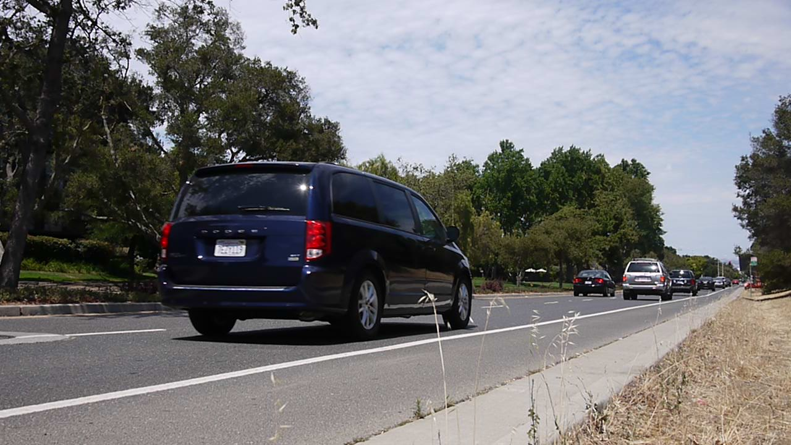
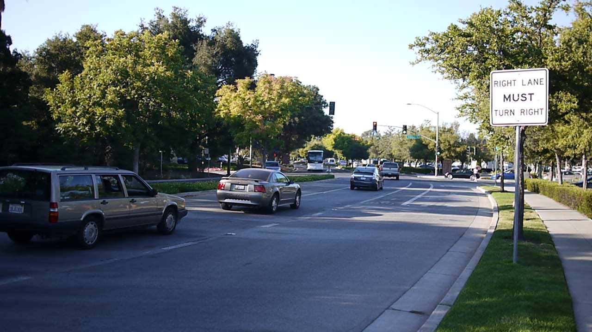
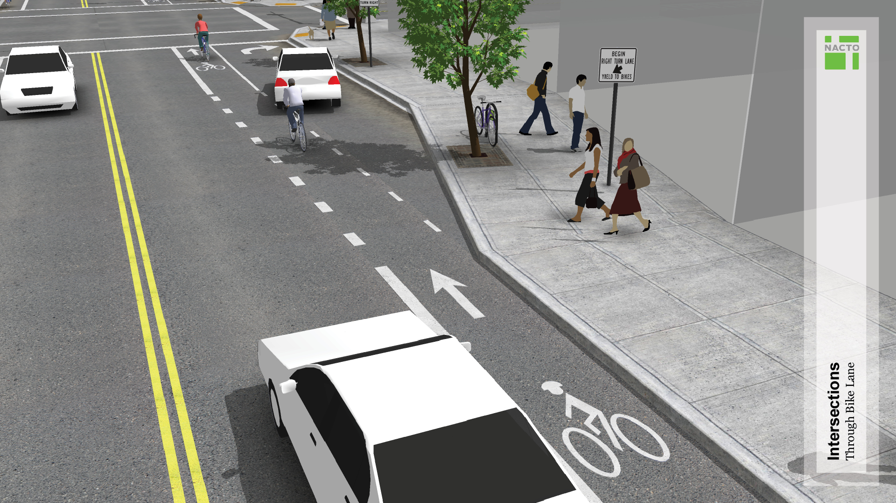
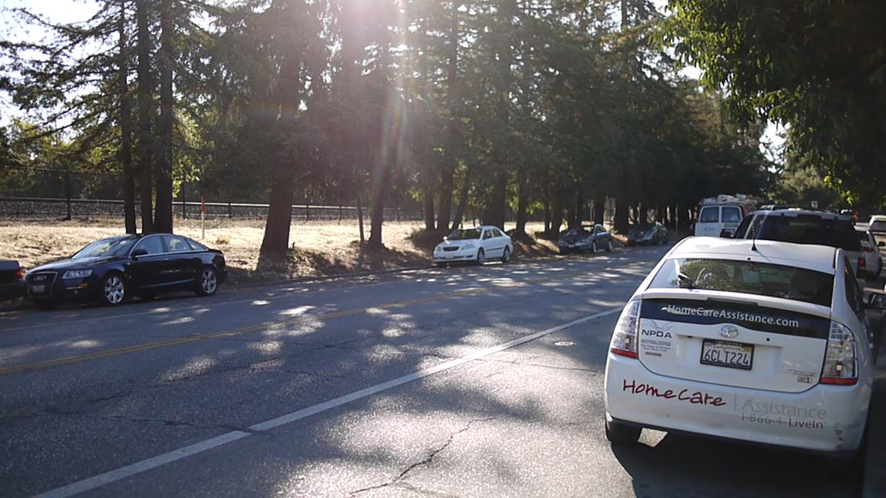

Sand Hill Road’s poor design
Before I moved to Sand Hill Road, Palo Alto, I knew the stats. I knew it was one of the richest roads in the world, housing an unprecedented number of venture capitalists and successful inventors. I knew the history of the area, of decades of innovation and worldwide progress originating here. I had heard the stories of an unprecedented concentration of intelligence, of conversations in coffee shops about algorithms and automata, about interaction psychology and parsing theory.
I expected nothing short of a perfect society, where everything is well-designed. I imagined a wonderful public transportation system, that takes you anywhere as fast as a car would, but more efficiently. I imagined excellent walking and biking infrastructure, as a pleasurable and healthy way of transportation, for children, elderly, and angel investors alike. I imagined a place where hackers and designers had optimized everything, eradicating all crime, accidents, and general unhappiness. After all, this was the place of Moore and Musk, of Kay and Khan, of Wales and Woz — people committed to making the world better.
Boy, was I wrong.
* * *
In this article I'll show the dire state of public infrastructure in one of the richest places on earth. I was particularly shocked by the poor design of bicycling infrastructure. Most importantly, I know that it doesn't have to be this way. Because where I come from — the Netherlands — they have gotten this right.
Exhibit A: crossings
Let's look at the road right in front of my apartment:

That isn't too bad. It's pretty big, because it isn't a residential road. Actual houses are on smaller roads.
You are supposed to bike on the right, separated from the cars by some paint. This can be a little unsettling, since the cars can drive pretty fast. After all, it's a major road.
Cars can keep their lane pretty well, so you just need to remember one rule. If you don't want to die, stay right. I personally want to live, so I stay the heck right.
Now we come at a crossing:

Note anything odd? If you're an American, you probably think this crossing looks perfectly normal. That means you're spoiled already. Try to forget what you think is normal, and look at the photo with fresh eyes.
I had one rule to keep me from dying: stay right. Yet here they want me to go left, to go to the centre of the crossing. Instead of keeping me as far away from cars as possible, which can easily kill me, the civil engineers actually want me to mingle with them. They want me to throw myself in front of the right-turning cars. No wonder most biking accidents happen at intersections.
While this design is bad for bikers, it's also bad for car drivers. If they want to turn right, they have to be very careful not to drive into a bicyclist, who are often in their blind spot.
Turning left is even worse for bicyclists. They have to find their way through the cars until they are in the leftmost lane. This creates numerous conflicts between the bicyclists and car drivers.
* * *

This junction design is the official recommendation of the NACTO, a leading American group of infrastructure designers. Surely they must've done extensive research of various designs. So, how come that in my home country, the Netherlands, I have never seen this brilliant design? That's because there are better alternatives.
What would happen if the bike lane would be kept at the right? One disadvantage for car drivers, is that they would have to watch out for passing bicyclists when turning right. But they have to watch out for pedestrians anyway, who cross the road at the same time. And when lining up for the crossing, the bicyclists would be visible at a predictable location, much safer than exchanging positions with cars at high speeds.
One might then argue that this makes it harder for bicyclists to turn left. This is not true. It actually becomes safer to cross straight first, and then line up with other bicyclists crossing there. Again, this is similar to how pedestrians cross.
What I found most interesting when observing crossings here, is that many bicyclists actually use this style of crossing themselves. Especially at larger crossing bicyclists often use the pedestrian crossings, probably because it feels safer to do that. It seems that this is the kind of intersection people themselves want, despite what the civil engineers might think. Listen to your users.

* * *
In my hometown of Groningen they have further optimized the crossing of bikes. Bikes have separate traffic lights, that all turn green at the same time. What follows looks chaotic, but is in fact very safe and organized. The absence of cars means no high-impact collisions, and even between bikes collisions are rare. It turns out people are naturally pretty good at responding to each others' movement.
Biking cultures
If you are from the US, you might have noticed that no one wears helmets in the video above. This is indicative of a fundamentally different view on biking.
In the US, biking is dangerous because only few people bike. If there were more people biking, then car drivers would be more used to it, and civil engineers would pay more attention to biking when designing infrastructure. The biggest reason why few people bike, is because it is seen as a recreational activity. People go biking in the weekend, for fun. They drive through scenic routes with fancy mountain bikes, lycra pants, and, indeed, helmets. This is what I call a recreational biking society.
In the Netherlands, people from all walks of life jump on their bike to go to work, friends, the market, or the movies. Biking is seen primarily as a way to get somewhere. As a result, biking infrastructure is phenomenal, further reinforcing biking as a mode of transport, or what I call a transportational biking society.
| Recreational biking society | Transportional biking society |
|---|
| Most people bike for fun | Most people bike to get somewhere |
| Safety helmets ubiquitous | Safety helmets unnecessary |
| Children, hipsters, and racers | From high-heeled businesswomen to old men with their grandchildren |
| Being "a bicyclist" | Being "someone with a bike" |
| Inconsistent and confusing design for bikes | Intentional design for cars, bikes, and pedestrians |
| Too few bikers to pressure government | Politicians themselves bike to work |
| New bikers get discouraged | Non-bikers get encouraged |
| Huge car parking lots | Biking garages larger than those of cars |
| Buses and trains transport bikes | People have a separate bike at every station |
| School buses | Biking to school |
| Narrow lanes, so bikers should have the same speed | Wide lanes, everyone at their own pace |
| Signs for bike-friendly neighbourhoods | Signs for bike-unfriendly neighbourhoods |
| Highway through city centre | Cars banned in city centre |
The good news is that once you reach a critical mass, the transition to a transportational biking society becomes self-sustaining. When enough people bike, you get more political pressure to improve the infrastructure, which in turn attracts more people to biking. When even more people bike, businesses and shops will open at places convenient for bikers, which then attracts even more people to start biking. There are even immediate positive effects that don't require a critical mass. For example, simply having more people biking means less biking accidents (compared to the number of bikers).
Exhibit B: parked cars
Every day I bike from Sand Hill Road to the Caltrain station in Palo Alto. The last bit of this trip I bike through Alma Road, which has quite a few cars parked on the side of the road. To an American, this again looks perfectly normal. But to me, it looks completely crazy.
